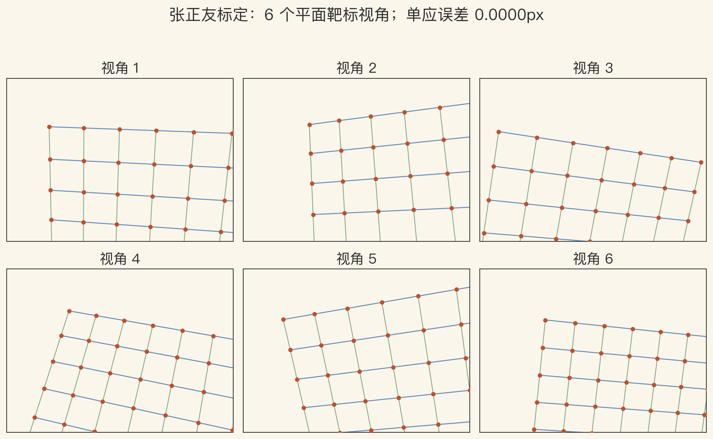
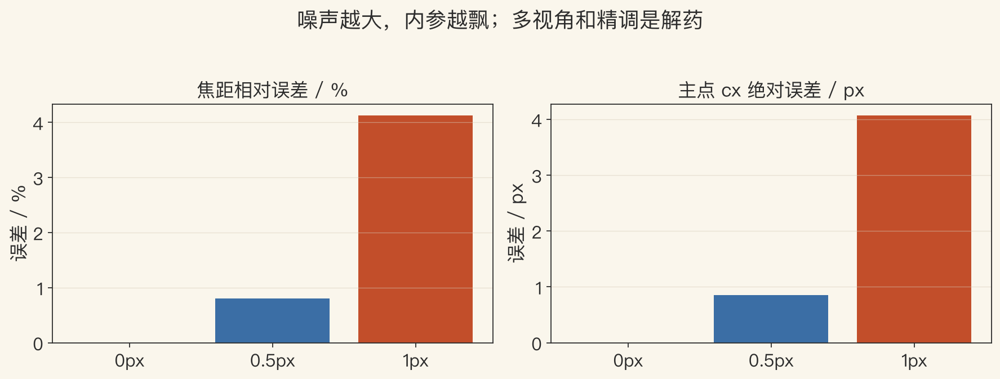
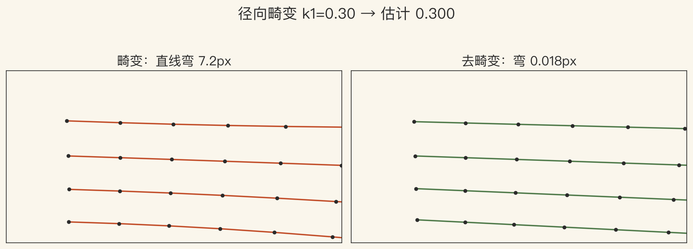

第 11 章 · 内参标定
K 到底从哪里来
E016 讲直觉，E017 讲畸变。
E104 讲已知 K 的位姿。
这一集补 K 的估计。
只讲内参，位姿留给下一集。
依据：原书第 685 页
本集三问
靶标怎么拍
单应怎么变成内参
畸变怎么一起估
正课第一百三十二集
01 / 12
书上第 685–686 页 · 标定图案
立体靶与平面棋盘格
标定图案是可靠方式。
平面靶远离平面时位姿差。
要占满工作空间。
每张图算一个单应。
依据：原书第 685–686 页
两种靶标
三维：准，但笨重
平面：轻，但要多角度
EXIF 焦距只能粗估
自标定要大量图像
正课第一百三十二集
02 / 12
书上第 686 页 · DLT
单应：平面到图像的 3×3 映射
每张图算一个单应。
DLT：两组方程，SVD 求解。
先归一化，再反归一化。
单应 8 个自由度。
依据：原书第 686 页；DLT 为标准实现
x′ = H x
H：3×3 单应；齐次坐标下整体尺度不影响投影
正课第一百三十二集
03 / 12
书上第 686–687 页 · Zhang
从单应到 B，再到 K
对 B 的九个元素构造线性约束。
B 是绝对二次曲线的像 IAC。
每张单应给两个约束。
B 有五个自由度，至少三个视角。
依据：原书第 686–687 页
B = K⁻ᵀ K⁻¹
B：IAC；K：内参矩阵；线性解作初值，再做非线性精调
正课第一百三十二集
04 / 12
图 1 · 合成标定
六个视角，一套内参
7×6 平面靶标，6 个视角。
合成 640×480 图像。
DLT 重投影误差 0.0000 像素。
fx 800.00、fy 780.00，主点 320/240。
依据：本集实验

标定视角：7×6 平面靶标与 6 个视角｜程序生成，未用教材或论文原图
正课第一百三十二集
05 / 12
书上第 687–688 页 · 消失点
只求焦距的捷径
假设主点在中心、方形像素、无倾斜。
旋转矩阵列正交，得到焦距方程。
消失点越靠中心越准。
靶标绕 45 度轴倾斜。
依据：原书第 687–688 页
适用与边界
适合建筑、盒子等平行线场景
只用一张图，快
假设强，适合粗模
正课第一百三十二集
06 / 12
图 2 · 噪声与稳定性
噪声一大，内参就飘
0、0.5、1 像素三档噪声。
焦距误差 0.00% / 0.80% / 4.13%。
主点误差 0.00 / 0.85 / 4.07 像素。
1 像素噪声，RMS 1.329 像素。
依据：本集实验

噪声敏感性：焦距与主点误差｜程序生成，未用教材或论文原图
正课第一百三十二集
07 / 12
书上第 691–692 页 · 畸变
直线拍成弧线
广角镜头要建模径向畸变。
桶形向中心拉，枕形向外推。
铅垂线法：调到直线变直。
有靶标时，畸变并入内外参一起估。
依据：原书第 691–692 页
模型与做法
x(1 + k1 r² + k2 r⁴)
r：到畸变中心的半径
k1 的符号反映方向
正课第一百三十二集
08 / 12
图 3 · 畸变校正
弯 7 像素，去完回直线
合成畸变 k1 = 0.30。
最大弯曲 7.15 像素。
估出 k1 = 0.3000，焦距误差 0.000000。
去畸变后弯曲 0.0176 像素。
依据：本集实验

径向畸变：k1=0.30 的弯曲与去畸变｜程序生成，未用教材或论文原图
正课第一百三十二集
09 / 12
书上第 689–691 页 · 完整管线
五步再加非线性精调
拍靶标、提角点、算单应。
线性估内参，非线性重投影精调。
有畸变就加进最后一步。
纯旋转拍全景也能估焦距。
依据：原书第 689–691 页
最高精度
内参、外参、畸变一起最小化
工业级还会做束调整
线性解只是初值
正课第一百三十二集
10 / 12
标定边界 · 这一集不做什么
别拿坏数据喂优化器
靶标只占一小块。
只拍正面，不倾斜。
角点噪声大。
把 EXIF 焦距当精确值。
依据：原书第 685 页；本集实验
lab 边界
合成 7×6 靶标，6 个视角
自写 Zhang 线性解
畸变用 OpenCV 做参照
不拍真实相机，不做束调整
正课第一百三十二集
11 / 12
第 11 章 · 闭环
从棋盘格到内参
靶标 → 单应 → B → K。
畸变并入重投影精调。
作业：拍 10–15 张不同角度。
下一集：已知 K 解位姿。
依据：原书第 685 页；第 11 章 §11.1
下一步
P3P / PnP 入场
先估焦距和主点，再加畸变
记录重投影误差与参数变化
正课第一百三十二集
12 / 12